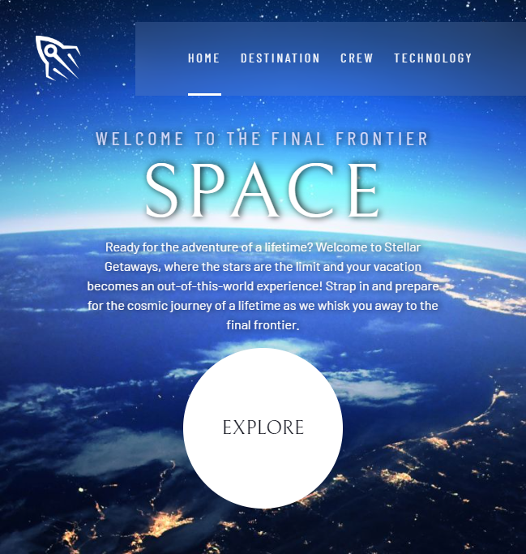
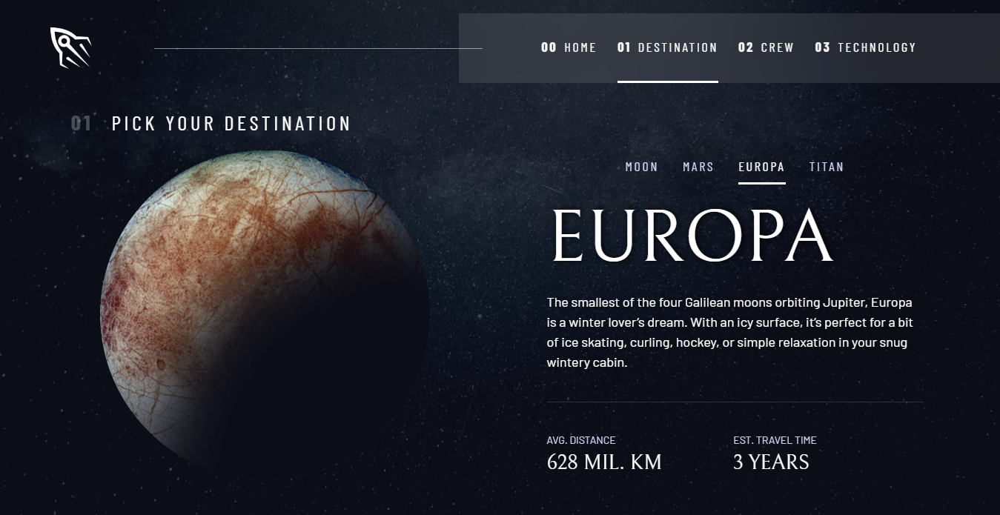

Created from Figma design
I'm excited to share my recent project, which demonstrates my growth as a junior front-end developer and my dedication to mastering the fundamentals. This project showcases my attention to detail, problem-solving skills, and eagerness to learn and improve.
Introducing my latest project, a captivating space tourism website that takes visitors on an immersive journey into the wonders of the cosmos. This website consists of several key sections, including the main page, destination page, crew page, and technology page. The main page sets the tone with an enticing "Explore" button, leading visitors to the destination page, where they can delve into the possibilities of space travel. The destination page features a sleek and user-friendly tab system, offering four remarkable destinations to choose from: the moon, Mars, Europa, and Titan. Each destination unveils fascinating details and highlights the unique experiences that await adventurous travelers. Additionally, the crew page boasts a dynamic tab system with dot indicators, providing insights into the dedicated team behind each space mission. Visitors can explore the roles of the commander, mission specialist, pilot, and flight engineer, gaining a deeper understanding of the expertise required for successful space exploration. Finally, the technology page showcases another engaging tab system, offering valuable information about the launch vehicle, space capsule, and spaceport infrastructure.
Working with the Figma design, I gained experience in turning static
designs into dynamic web interfaces. To improve maintainability, I
developed a design system with reusable components and classes, which
not only made the code more efficient but also allowed for easy updates
and scalability. Leveraging custom properties in CSS, I streamlined the
styling process and ensured a consistent visual experience across the
website. The responsive nature of the project required me to employ a
grid system, adapting the layout for different screen sizes. I
successfully implemented a tab system using attribute selectors in
JavaScript, enabling users to navigate between different sections
seamlessly. This project highlights my technical skills, including HTML
and CSS proficiency, understanding of JavaScript logic, and ability to
solve problems creatively. I am proud of the progress I've made as a
junior developer and the outcome of this project.
GitHub Repository:
https://whitimus.github.io/stellar-getaways/